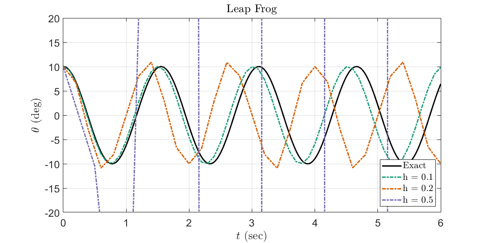
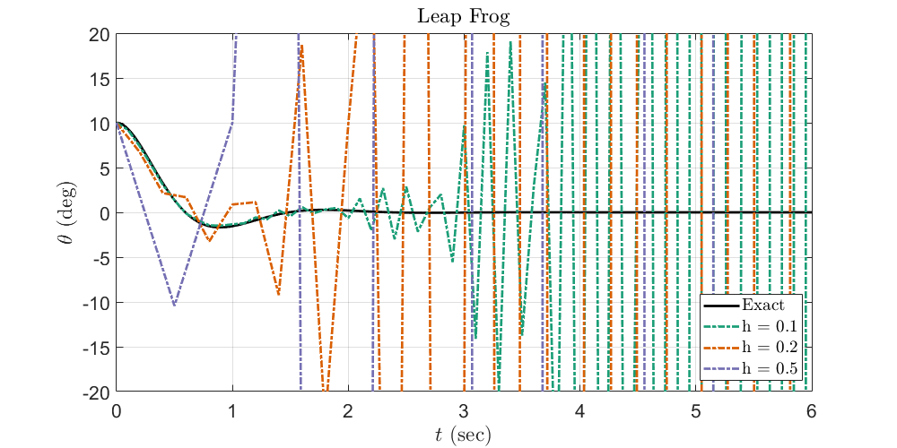
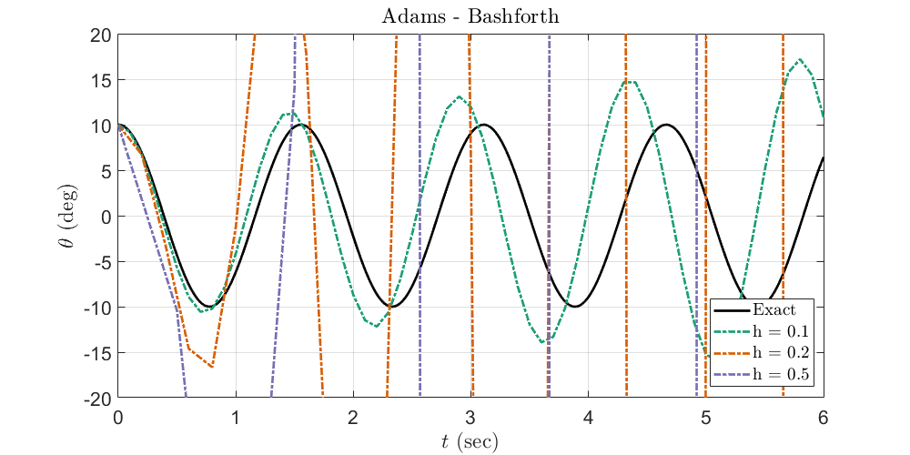
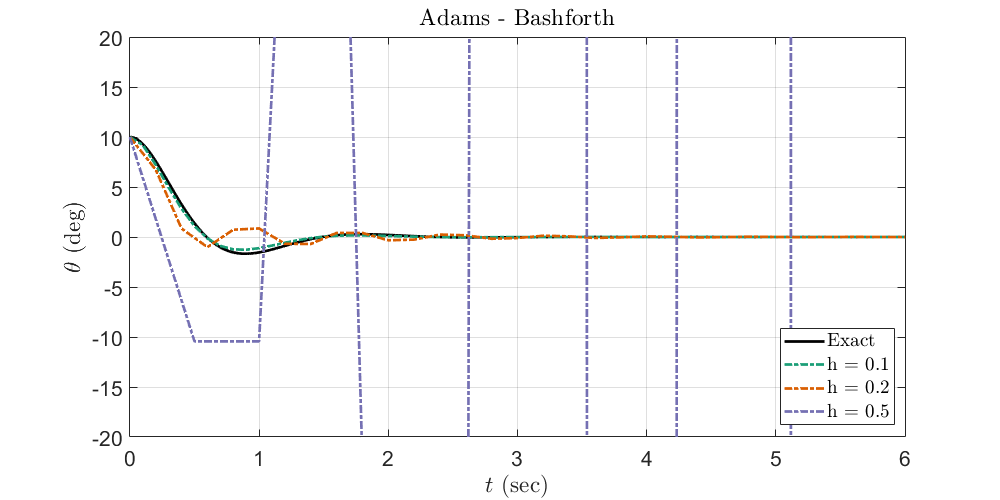
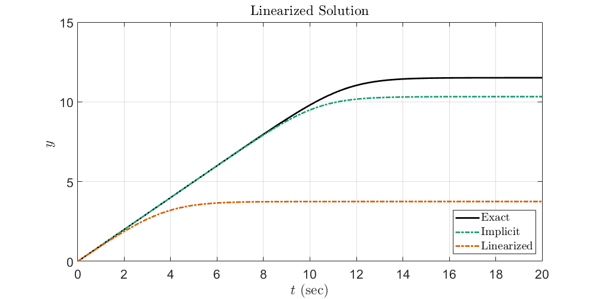
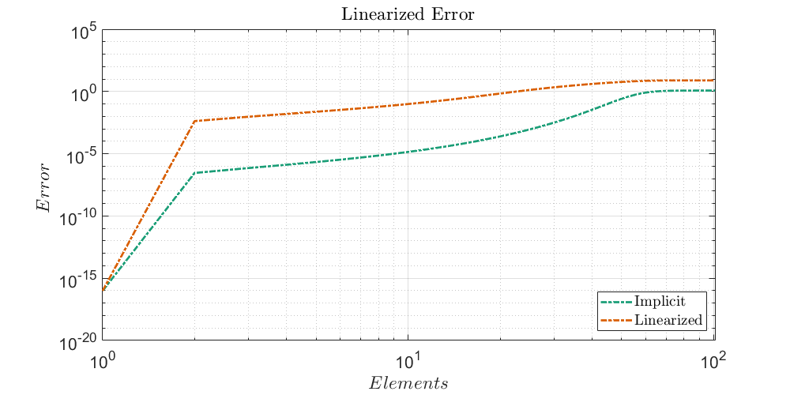
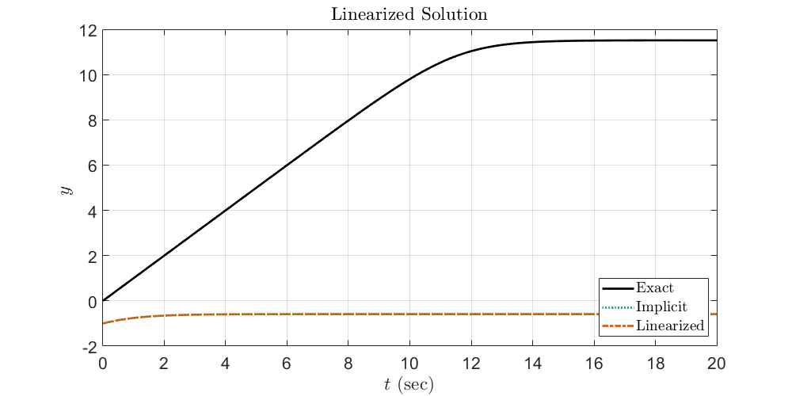
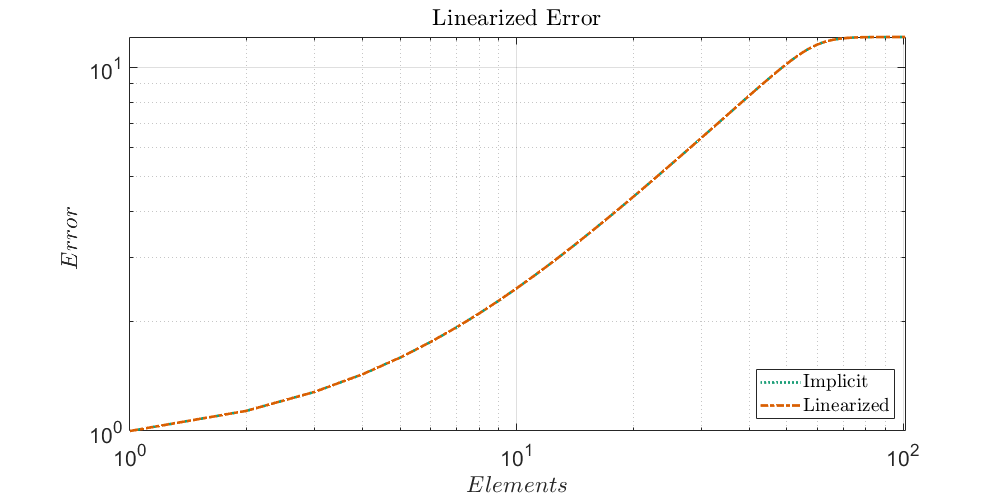

Contents
%{ @author: Benjamin Bemis Ph.D Student, Advisor: Dr Juliano Description: AME 60614: Numerical Methods Homework: 5 Due: 11/12/2024 %}
Preperation of the workspace
clear all clc close all fontsize = 16; % set(0,'DefaultFigureWindowStyle','docked') set(0,'DefaultTextInterpreter','latex') set(0,'DefaultAxesFontSize',fontsize) set(0,'DefaultLegendFontSize',fontsize) colors = ["#000000","#1b9e77","#d95f02","#7570b3","#0099FF"]';
Setting data paths
Make sure to update this for the machine that you are working on. (Maybe, This should now run on any machine without change. 7/24/24) Change the current folder to the folder of this m-file.
if(~isdeployed) cd(fileparts(matlab.desktop.editor.getActiveFilename)); end addpath(cd) % cd ..; % Moving up a directory (from processing_code) basepath = cd; % Pulling the current directory if isunix imagepath = [basepath '/images/']; % Unix mkdir(imagepath); elseif ispc imagepath = [basepath '\images\']; % Windows mkdir(imagepath); else disp('Platform not supported') end
Warning: Directory already exists.
Problem 9 in Chapter 4
funlist = {@leapfrog, @AB2};
funlist_str = ["Leap Frog", "Adams - Bashforth"];
% funlist = {@leapfrog};
% funlist_str = ["Leap Frog"];
exact = @(t) 10*cos(4.04351*t);
exact2 = @(t) exp(-2* t).* (5.6911* sin(3.51426 *t) + 10 *cos(3.51426*t));
g = 9.81; %m/s^2
l = 0.6; %m
c = 4;
theta0= 10; %deg
thetap0 = 0; % assume at rest
f_theta = @(t, theta, thetap) -g/l *theta ;
f_theta_2 = @(t, theta, thetap) -g/l *theta -c*thetap ;
start = 0;
t0 = 0;
tf = 6;
h = [0.1 0.2 0.5];
for i = 1:length(funlist)
figure
plot(linspace(t0,tf,1e3),exact(linspace(t0,tf,1e3)),"LineWidth",2, 'DisplayName', "Exact", color=colors(1,:))
hold on
for n = 1:length(h)
[t,y,yp] = funlist{i}(f_theta,theta0,thetap0, t0, tf, h(n), start);
plot(t,y, "-.", "LineWidth",2, 'DisplayName',strcat("h = ",string(h(n))) , color=colors(n+1,:))
hold on
end
xlabel('$t$ (sec)')
ylabel('$\theta$ (deg)')
legend(Location="southeast",Interpreter="latex")
xlim([t0 tf])
ylim([-20 20])
grid on
title(funlist_str(i))
set(gcf,'Position',[0,0,1000,500])
print(gcf,[imagepath,'Q9_a_RK',char(string(i)),'.png'],'-dpng');
figure
plot(linspace(t0,tf,1e3),exact2(linspace(t0,tf,1e3)),"LineWidth",2, 'DisplayName', "Exact", color=colors(1,:))
hold on
for n = 1:length(h)
[t,y,yp] = funlist{i}(f_theta_2,theta0,thetap0, t0, tf, h(n),start);
plot(t,y, "-.", "LineWidth",2, 'DisplayName',strcat("h = ",string(h(n))) , color=colors(n+1,:))
hold on
end
xlabel('$t$ (sec)')
ylabel('$\theta$ (deg)')
legend(Location="southeast",Interpreter="latex")
xlim([t0 tf])
ylim([-20 20])
grid on
title(funlist_str(i))
set(gcf,'Position',[0,0,1000,500])
print(gcf,[imagepath,'Q9_b_RK',char(string(i)),'.png'],'-dpng');
end
A = [0 1; -g/l -c];
lamda_9 = eig(A)
lamda_9 = -2.0000 + 3.5143i -2.0000 - 3.5143i   
Problem 12
y0 = - 1e-5; f_12 = @(t, y) exp(y-t); dfdy = @(t, y) exp(y-t); exact_12 = @(t) -log(exp(-y0) + exp(-t) -1); h = 0.2; t0 = 0; tf = 20; [t_imp,y_imp] = implicitEuler(f_12, y0, t0, tf, h); [t_lin,y_lin] = limplicitEuler(f_12, dfdy, y0, t0, tf, h); figure plot(linspace(t0,tf,1e3),exact_12(linspace(t0,tf,1e3)),"LineWidth",2, 'DisplayName', "Exact", color=colors(1,:)) hold on plot(t_imp, y_imp,"-.","LineWidth",2, 'DisplayName', "Implicit", color=colors(2,:)) hold on plot(t_lin, y_lin,"-.","LineWidth",2, 'DisplayName', "Linearized", color=colors(3,:)) xlabel('$t$ (sec)') ylabel('$y$ ') legend(Location="southeast",Interpreter="latex") xlim([t0 tf]) ylim([0 15]) grid on title("Linearized Solution") set(gcf,'Position',[0,0,1000,500]) print(gcf,[imagepath,'Q12_c',char(string(i)),'.png'],'-dpng'); figure % plot(linspace(t0,tf,1e3),exact_12(linspace(t0,tf,1e3)),"LineWidth",2, 'DisplayName', "Exact", color=colors(1,:)) % hold on loglog(exact_12(t0:h:tf) - y_imp,"-.","LineWidth",2, 'DisplayName', "Implicit", color=colors(2,:)) hold on loglog(exact_12(t0:h:tf) - y_lin,"-.","LineWidth",2, 'DisplayName', "Linearized", color=colors(3,:)) xlabel('$Elements$') ylabel('$Error$ ') legend(Location="southeast",Interpreter="latex") % xlim([t0 tf]) % ylim([0 15]) grid on title("Linearized Error") set(gcf,'Position',[0,0,1000,500]) print(gcf,[imagepath,'Q12_c_err',char(string(i)),'.png'],'-dpng'); y0 = -1; [t_imp,y_imp_2] = implicitEuler(f_12, y0, t0, tf, h); [t_lin,y_lin_2] = limplicitEuler(f_12, dfdy, y0, t0, tf, h); figure plot(linspace(t0,tf,1e3),exact_12(linspace(t0,tf,1e3)),"LineWidth",2, 'DisplayName', "Exact", color=colors(1,:)) hold on plot(t_imp, y_imp_2,":","LineWidth",2, 'DisplayName', "Implicit", color=colors(2,:)) hold on plot(t_lin, y_lin_2,"-.","LineWidth",2, 'DisplayName', "Linearized", color=colors(3,:)) xlabel('$t$ (sec)') ylabel('$y$ ') legend(Location="southeast",Interpreter="latex") xlim([t0 tf]) % ylim([0 15]) grid on title("Linearized Solution") set(gcf,'Position',[0,0,1000,500]) print(gcf,[imagepath,'Q12_d',char(string(i)),'.png'],'-dpng'); figure % plot(linspace(t0,tf,1e3),exact_12(linspace(t0,tf,1e3)),"LineWidth",2, 'DisplayName', "Exact", color=colors(1,:)) % hold on loglog(exact_12(t0:h:tf) - y_imp_2,":","LineWidth",2, 'DisplayName', "Implicit", color=colors(2,:)) hold on loglog(exact_12(t0:h:tf) - y_lin_2,"-.","LineWidth",2, 'DisplayName', "Linearized", color=colors(3,:)) xlabel('$Elements$') ylabel('$Error$ ') legend(Location="southeast",Interpreter="latex") % xlim([t0 tf]) % ylim([0 15]) grid on title("Linearized Error") set(gcf,'Position',[0,0,1000,500]) print(gcf,[imagepath,'Q12_d_err',char(string(i)),'.png'],'-dpng');   
Functions
function [t, y] = explicitEuler(f, y0, t0, tf, h) % explicitEuler solves an ODE using the explicit Euler method. % % Inputs: % f - Function handle for dy/dt = f(t, y) % y0 - Initial condition (value of y at t = t0) % t0 - Initial time % tf - Final time % h - Step size % % Outputs: % t - Array of time steps % y - Array of solution values at each time step % Define the time vector from t0 to tf with step size h t = t0:h:tf; N = length(t); % Number of time steps y = zeros(1, N); % Preallocate y for speed % Set the initial condition y(1) = y0; % Apply the explicit Euler method for n = 1:N-1 y(n+1) = y(n) + h * f(t(n), y(n)); end end function [t, y] = implicitEuler(f, y0, t0, tf, h) % implicitEuler solves an ODE using the implicit Euler method. % % Inputs: % f - Function handle for dy/dt = f(t, y) % y0 - Initial condition (value of y at t = t0) % t0 - Initial time % tf - Final time % h - Step size % % Outputs: % t - Array of time steps % y - Array of solution values at each time step % Define the time vector from t0 to tf with step size h t = t0:h:tf; N = length(t); % Number of time steps y = zeros(1, N); % Preallocate y for speed % Set the initial condition y(1) = y0; % Options for fsolve to increase accuracy and ensure convergence options = optimoptions('fsolve', 'Display', 'off'); % options = optimoptions('fmincon', 'Display', 'off'); % Apply the implicit Euler method for n = 1:N-1 % Define the function for the nonlinear equation at each step g = @(ynext) ynext - y(n) - h * f(t(n+1), ynext); % Use fsolve to solve for y(n+1) y(n+1) = fsolve(g, y(n), options); end end function [t, y] = limplicitEuler(f, dfdy, y0, t0, tf, h) % limplicitEuler solves a first-order ODE y' = f(t, y) % using a linearized implicit Euler method. % % Inputs: % f - Function handle for y' = f(t, y) % dfdy - Function handle for the partial derivative of f with respect to y % y0 - Initial condition for y % t0 - Initial time % tf - Final time % h - Step size % % Outputs: % t - Array of time steps % y - Array of solution values for y at each time step % Define the time vector from t0 to tf with step size h t = t0:h:tf; N = length(t); % Number of time steps y = zeros(1, N); % Preallocate y for the solution % Set the initial condition y(1) = y0; % Apply the linearized implicit Euler method for each step for n = 1:N-1 % Evaluate f and its derivative with respect to y at the current step fn = f(t(n+1), y(n)); dfdyn = dfdy(t(n+1), y(n)); % Calculate the next value of y using the linearized formula y(n+1) = y(n) + ((h * fn) / (1 - h * dfdyn)); end end function [t, y] = trapMethod(f, y0, t0, tf, h) % trapMethod solves an ODE using the trapezoidal method. % % Inputs: % f - Function handle for dy/dt = f(t, y) % y0 - Initial condition (value of y at t = t0) % t0 - Initial time % tf - Final time % h - Step size % % Outputs: % t - Array of time steps % y - Array of solution values at each time step % Define the time vector from t0 to tf with step size h t = t0:h:tf; N = length(t); % Number of time steps y = zeros(1, N); % Preallocate y for speed % Set the initial condition y(1) = y0; % Options for fsolve to increase accuracy and ensure convergence options = optimoptions('fsolve', 'Display', 'off'); % Apply the trapezoidal method for n = 1:N-1 % Define the function for the nonlinear equation at each step g = @(ynext) ynext - y(n) - (h/2) * (f(t(n), y(n)) + f(t(n+1), ynext)); % Use fsolve to solve for y(n+1) y(n+1) = fsolve(g, y(n), options); end end function [t, y] = RK2(f, y0, t0, tf, h) % RK2 solves an ODE using the 2nd-order Runge-Kutta method. % % Inputs: % f - Function handle for dy/dt = f(t, y) % y0 - Initial condition (value of y at t = t0) % t0 - Initial time % tf - Final time % h - Step size % % Outputs: % t - Array of time steps % y - Array of solution values at each time step % Define the time vector from t0 to tf with step size h t = t0:h:tf; N = length(t); % Number of time steps y = zeros(1, N); % Preallocate y for speed % Set the initial condition y(1) = y0; % Apply the 2nd-order Runge-Kutta method for n = 1:N-1 k1 = f(t(n), y(n)); k2 = f(t(n) + h/2, y(n) + h/2 * k1); y(n+1) = y(n) + h * k2; end end function [t, y] = RK4(f, y0, t0, tf, h) % RK4 solves an ODE using the 4th-order Runge-Kutta method. % % Inputs: % f - Function handle for dy/dt = f(t, y) % y0 - Initial condition (value of y at t = t0) % t0 - Initial time % tf - Final time % h - Step size % % Outputs: % t - Array of time steps % y - Array of solution values at each time step % Define the time vector from t0 to tf with step size h t = t0:h:tf; N = length(t); % Number of time steps y = zeros(1, N); % Preallocate y for speed % Set the initial condition y(1) = y0; % Apply the 4th-order Runge-Kutta method for n = 1:N-1 k1 = f(t(n), y(n)); k2 = f(t(n) + h/2, y(n) + h/2 * k1); k3 = f(t(n) + h/2, y(n) + h/2 * k2); k4 = f(t(n) + h, y(n) + h * k3); y(n+1) = y(n) + (h/6) * (k1 + 2*k2 + 2*k3 + k4); end end function [t, y1, y2] = explicitEuler_2(f, y0, v0, t0, tf, h) % A general second-order ODE y'' = f(t, y, y') % using the explicit Euler method. % % Inputs: % f - Function handle for y'' = f(t, y, y') % y0 - Initial condition for y (position) % v0 - Initial condition for y' (velocity) % t0 - Initial time % tf - Final time % h - Step size % % Outputs: % t - Array of time steps % y1 - Array of solution values for y at each time step % y2 - Array of solution values for y' at each time step % Define the time vector from t0 to tf with step size h t = t0:h:tf; N = length(t); % Number of time steps y1 = zeros(1, N); % Preallocate y1 for y (position) y2 = zeros(1, N); % Preallocate y2 for y' (velocity) % Set the initial conditions y1(1) = y0; y2(1) = v0; % Apply the explicit Euler method for n = 1:N-1 % Update y1 and y2 y1(n+1) = y1(n) + h * y2(n); y2(n+1) = y2(n) + h * f(t(n), y1(n), y2(n)); end end function [t, y1, y2] = implicitEuler_2(f, y0, v0, t0, tf, h) % General second-order ODE y'' = f(t, y, y') % using the implicit Euler method. % % Inputs: % f - Function handle for y'' = f(t, y, y') % y0 - Initial condition for y (position) % v0 - Initial condition for y' (velocity) % t0 - Initial time % tf - Final time % h - Step size % % Outputs: % t - Array of time steps % y1 - Array of solution values for y at each time step % y2 - Array of solution values for y' at each time step % Define the time vector from t0 to tf with step size h t = t0:h:tf; N = length(t); % Number of time steps y1 = zeros(1, N); % Preallocate y1 for y (position) y2 = zeros(1, N); % Preallocate y2 for y' (velocity) % Set the initial conditions y1(1) = y0; y2(1) = v0; % Options for fsolve options = optimoptions('fsolve', 'Display', 'off'); % Apply the implicit Euler method for n = 1:N-1 % Define the system of equations to solve at each step func = @(Y_next) [ Y_next(1) - y1(n) - h * Y_next(2); % y1^{n+1} = y1^n + h * y2^{n+1} Y_next(2) - y2(n) - h * f(t(n+1), Y_next(1), Y_next(2)) % y2^{n+1} = y2^n + h * f(t^{n+1}, y1^{n+1}, y2^{n+1}) ]; % Initial guess for fsolve Y_guess = [y1(n), y2(n)]; % Solve for Y_next = [y1^{n+1}; y2^{n+1}] using fsolve Y_next = fsolve(func, Y_guess, options); % Update y1 and y2 with the solved values y1(n+1) = Y_next(1); y2(n+1) = Y_next(2); end end function [t, y1, y2] = trapMethod_2(f, y0, v0, t0, tf, h) % General second-order ODE y'' = f(t, y, y') % using the trapezoidal (implicit) method. % % Inputs: % f - Function handle for y'' = f(t, y, y') % y0 - Initial condition for y (position) % v0 - Initial condition for y' (velocity) % t0 - Initial time % tf - Final time % h - Step size % % Outputs: % t - Array of time steps % y1 - Array of solution values for y at each time step % y2 - Array of solution values for y' at each time step % Define the time vector from t0 to tf with step size h t = t0:h:tf; N = length(t); % Number of time steps y1 = zeros(1, N); % Preallocate y1 for y (position) y2 = zeros(1, N); % Preallocate y2 for y' (velocity) % Set the initial conditions y1(1) = y0; y2(1) = v0; % Options for fsolve options = optimoptions('fsolve', 'Display', 'off'); % Apply the trapezoidal method for n = 1:N-1 % Define the system of equations to solve at each step func = @(Y_next) [ Y_next(1) - y1(n) - h/2 * (y2(n) + Y_next(2)); % y1^{n+1} = y1^n + h/2 * (y2^n + y2^{n+1}) Y_next(2) - y2(n) - h/2 * (f(t(n), y1(n), y2(n)) + f(t(n+1), Y_next(1), Y_next(2))) % y2^{n+1} = y2^n + h/2 * (f_n + f_{n+1}) ]; % Initial guess for fsolve Y_guess = [y1(n), y2(n)]; % Solve for Y_next = [y1^{n+1}; y2^{n+1}] using fsolve Y_next = fsolve(func, Y_guess, options); % Update y1 and y2 with the solved values y1(n+1) = Y_next(1); y2(n+1) = Y_next(2); end end function [t, y1, y2] = RK2_2(f, y0, v0, t0, tf, h) % General second-order ODE y'' = f(t, y, y') % using the second-order Runge-Kutta method. % % Inputs: % f - Function handle for y'' = f(t, y, y') % y0 - Initial condition for y (position) % v0 - Initial condition for y' (velocity) % t0 - Initial time % tf - Final time % h - Step size % % Outputs: % t - Array of time steps % y1 - Array of solution values for y at each time step % y2 - Array of solution values for y' at each time step % Define the time vector from t0 to tf with step size h t = t0:h:tf; N = length(t); % Number of time steps y1 = zeros(1, N); % Preallocate y1 for y (position) y2 = zeros(1, N); % Preallocate y2 for y' (velocity) % Set the initial conditions y1(1) = y0; y2(1) = v0; % Apply the second-order Runge-Kutta method for n = 1:N-1 % Calculate k1 values k1y1 = h * y2(n); k1y2 = h * f(t(n), y1(n), y2(n)); % Calculate k2 values k2y1 = h * (y2(n) + k1y2 / 2); k2y2 = h * f(t(n) + h / 2, y1(n) + k1y1 / 2, y2(n) + k1y2 / 2); % Update y1 and y2 y1(n+1) = y1(n) + k2y1; y2(n+1) = y2(n) + k2y2; end end function [t, y1, y2] = RK4_2(f, y0, v0, t0, tf, h) % RK4_2 % Inputs: % f - Function handle for y'' = f(t, y, y') % y0 - Initial condition for y (y(t0) = y0) % v0 - Initial condition for y' (y'(t0) = v0) % t0 - Initial time % tf - Final time % h - Step size % % Outputs: % t - Array of time steps % y1 - Array of solution values for y at each time step % y2 - Array of solution values for y' at each time step % Define the time vector from t0 to tf with step size h t = t0:h:tf; N = length(t); % Number of time steps y1 = zeros(1, N); % Preallocate y1 for y y2 = zeros(1, N); % Preallocate y2 for y' % Set the initial conditions y1(1) = y0; y2(1) = v0; % Apply the 4th-order Runge-Kutta method for n = 1:N-1 % Calculate k1 values k1_y1 = y2(n); k1_y2 = f(t(n), y1(n), y2(n)); % Calculate k2 values k2_y1 = y2(n) + h/2 * k1_y2; k2_y2 = f(t(n) + h/2, y1(n) + h/2 * k1_y1, y2(n) + h/2 * k1_y2); % Calculate k3 values k3_y1 = y2(n) + h/2 * k2_y2; k3_y2 = f(t(n) + h/2, y1(n) + h/2 * k2_y1, y2(n) + h/2 * k2_y2); % Calculate k4 values k4_y1 = y2(n) + h * k3_y2; k4_y2 = f(t(n) + h, y1(n) + h * k3_y1, y2(n) + h * k3_y2); % Update y1 and y2 using weighted average of slopes y1(n+1) = y1(n) + (h/6) * (k1_y1 + 2*k2_y1 + 2*k3_y1 + k4_y1); y2(n+1) = y2(n) + (h/6) * (k1_y2 + 2*k2_y2 + 2*k3_y2 + k4_y2); end end function [t, y1, y2] = AB2(f, y0, v0, t0, tf, h, start) % AB2 solves a general second-order ODE y'' = f(t, y, y') % using the second-order Adams-Bashforth method. % % Inputs: % f - Function handle for y'' = f(t, y, y') % y0 - Initial condition for y (position) % v0 - Initial condition for y' (velocity) % t0 - Initial time % tf - Final time % h - Step size % start - Start method % % Outputs: % t - Array of time steps % y1 - Array of solution values for y at each time step % y2 - Array of solution values for y' at each time step % Define the time vector from t0 to tf with step size h t = t0:h:tf; N = length(t); % Number of time steps y1 = zeros(1, N); % Preallocate y1 for y (position) y2 = zeros(1, N); % Preallocate y2 for y' (velocity) % Set the initial conditions y1(1) = y0; y2(1) = v0; if start == 1 % Use explicit Euler for the first step to get y1(2) and y2(2) y1(2) = y1(1) + h * y2(1); y2(2) = y2(1) + h * f(t(1), y1(1), y2(1)); else % Use RK2 for the first step k1y1 = h * y2(1); k1y2 = h * f(t(1), y1(1), y2(1)); % Calculate k2 values k2y1 = h * (y2(1) + k1y2 / 2); k2y2 = h * f(t(1) + h / 2, y1(1) + k1y1 / 2, y2(1) + k1y2 / 2); % Update y1 and y2 y1(2) = y1(1) + k2y1; y2(2) = y2(1) + k2y2; end % Apply the Adams-Bashforth method for the rest of the steps for n = 2:N-1 % Update y1 and y2 using the Adams-Bashforth formula y1(n+1) = y1(n) + h * (3/2 * y2(n) - 1/2 * y2(n-1)); y2(n+1) = y2(n) + h * (3/2 * f(t(n), y1(n), y2(n)) - 1/2 * f(t(n-1), y1(n-1), y2(n-1))); end end function [t, y1, y2] = leapfrog(f, y0, v0, t0, tf, h, start) % leapfrog solves a general second-order ODE y'' = f(t, y, y') % using the leapfrog method with an explicit Euler or RK2 start. % % Inputs: % f - Function handle for y'' = f(t, y, y') % y0 - Initial condition for y (position) % v0 - Initial condition for y' (velocity) % t0 - Initial time % tf - Final time % h - Step size % start - Start method % % Outputs: % t - Array of time steps % y1 - Array of solution values for y at each time step % y2 - Array of solution values for y' at each time step % Define the time vector from t0 to tf with step size h t = t0:h:tf; N = length(t); % Number of time steps y1 = zeros(1, N); % Preallocate y1 for y (position) y2 = zeros(1, N); % Preallocate y2 for y' (velocity) % Set the initial conditions y1(1) = y0; y2(1) = v0; if start == 1 % Use explicit Euler for the first step to get y1(2) and y2(2) y1(2) = y1(1) + h * y2(1); y2(2) = y2(1) + h * f(t(1), y1(1), y2(1)); else % Use RK2 for the first step k1y1 = h * y2(1); k1y2 = h * f(t(1), y1(1), y2(1)); % Calculate k2 values k2y1 = h * (y2(1) + k1y2 / 2); k2y2 = h * f(t(1) + h / 2, y1(1) + k1y1 / 2, y2(1) + k1y2 / 2); % Update y1 and y2 y1(2) = y1(1) + k2y1; y2(2) = y2(1) + k2y2; end % Apply the leapfrog method for the rest of the steps for n = 2:N-1 % Full-step for position y1(n+1) = y1(n-1) + 2*h * y2(n); % Full-step for velocity y2(n+1) = y2(n-1) + 2*h * f(t(n), y1(n), y2(n)); end end